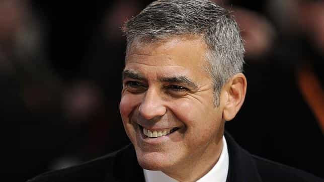
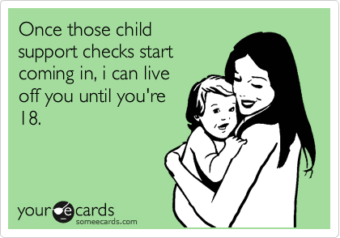
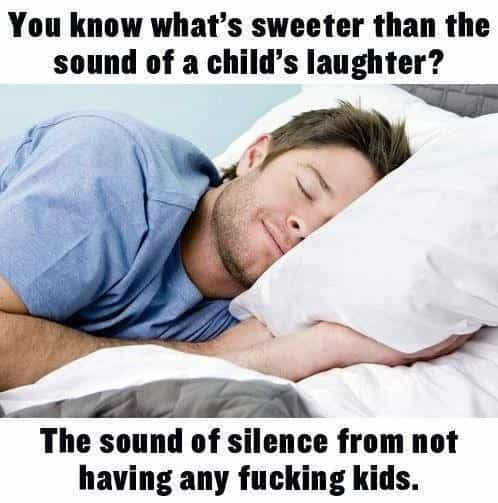

Bacon is a libertarian that enjoys spending his time in developing countries


In the last few years there have even been many articles and even books written by women expelling the virtues of avoiding motherhood. In fact any cursory glance at the majority of child-free websites or forums would show that 99% of the contributors are female. However much of the content about women avoiding motherhood is simply not applicable to men opting out of fatherhood.
For example, I think women have a different relationship with remaining childless because they need to reach a decision about becoming a parent relatively early in adulthood as after they reach 40, natural childbirth for them is a difficult thing to achieve. This is in stark contrast to men who can delay parenthood into old age as anybody who has traveled to South East Asia can attest to frequently seeing men in their 70´s having babies with younger wives and girlfriends.
As men, we tend to think of life logically and put our emotions aside when making decisions about what we want in our lives. Consciously or unconsciously most men realize the financial implications of having children because unlike women we cannot expect someone else to foot the bill for them. Even if you have no interest in having a child and have one by accident a man is aware of the power of the state to garnish his paycheck or even lock him up if he loses his job and falls behind paying child support.
For those men with an interest in making it work with the mother or supporting the child beyond the minimum financial requirements, they are almost always signing up for large financial commitments. Consider that as a man without children you can choose to live close to work, giving you more free time since you have a smaller commute and without children you can live in a smaller more economical place. Compared to say a father who now needs a larger home with adequate space for the kids and that is located in a good school district and you begin to see how doing the right thing for your kids starts to become such an expensive undertaking.
From a strictly financial standpoint children no longer provide the return on investment they once had when 90% of the population were living on farms. Nor in 2013 America can they be relied on to provide long-term care to their parents as that work has now been outsourced to nursing homes at the first sign of trouble.
To further illustrate the financial differences between the father and a child-free man you need to look at opportunity costs which can best be described as “the cost of an alternative that must be forgone in order to pursue a certain action.” A man with kids puts the needs of his children first and in order to provide stability to his kids will usually pass on a promotion or job lead which requires a move to another city while a child-free man would have little to hold him back.
One must also examine the opportunity cost of the excess capital that the child-free man can have to make towards investments since his excess discretionary funds can help him build up a large investment portfolio. And perhaps the biggest opportunity cost lost to having children is that when you have only yourself to think about you are generally more willing to take on greater risk with starting one’s own business rather than holding on to a steady job because you now can’t afford to lose the health plan and guaranteed paycheck. Who knows how many startup and innovative companies are never built by family men not willing to risk going alone and instead need to hold onto their comfortable office job?

The opportunity cost idea of having kids also addresses a lifestyle of freedom which is something men without children have in abundance since they are only responsible for themselves. As humans we are in a constant state of evolution and part of that involves making changes to your life when you feel it is the right thing to do. As such many fathers may find themselves working jobs they hate to support their family while they yearn for a change of lifestyle and to start a different career or even to expatriate.
Making changes to one’s life which may be necessary to finding personal happiness are very difficult to do when you weigh your life down with the responsibility of providing for children. But beyond having the mobility to make vast lifestyle changes for many men the freedom achieved by never having kids might be something comparatively trivial like wanting to sleep in every weekend or not having to worry about finding a babysitter to engage in some fun with your friends. Personally I don’t want to ever feel like a prisoner to the lifestyle and time obligations that come with correctly raising a child.
I think the freedom achieved in man’s life by never having children speaks to a larger issue which is that you only get one shot at this life so you should live it with no regrets or in the case of children buyer’s remorse. To help summarize this I defer to famous child-free bachelor George Clooney who when asked about his decision to not have kids replied:
I remember Uncle George sitting in bed (death bed), 68 years old. He looked at me and said, ‘What a waste.’ … I came to the conclusion that I was not going to wake up one day in my 60s and say, ‘What a waste.’ I was going to grab as much out of this life as I could.
This quote addresses the issue that kids are a major lifestyle change and once they are in your life you do not get to hit the reset button. The lifestyle of having a family is not as necessary to male happiness as it is to women since men are more individualistic in nature and men are also less likely to feel a void without children.
While I do think some men are naturally paternal it is not encoded in all men, just look at the animal kingdom, how many male animals stay with the young? I think for the majority of men becoming a father is a learned behavior through social conditioning rather than an instinctive paternal nature. The fact is most men have little to no interest in dealings with babies and children and would rather spend their free time on their passions and hobbies.

Historically society was aware of the sacrifice men made in providing for women and children and rewarded men by giving them dominion over their family. Unfortunately today this is no longer the case in many parts of the world (e.g. Anglosphere) and this has strongly disincentivized men from wanting to have children. Any objective look at the power of Child Protection Agencies and Law Enforcement would conclude that modern day fathers have been emasculated by the state and now they are no longer the head of the household.
To help illustrate this point consider that women can create false domestic violence accusations to have the man removed from the home (which he paid for) and by default receive custody of the children while accusations are investigated. The power of the state is especially visible when the relationship with the child´s mother ends and now the man must submit to the decisions made by the family court on mandates of child custody and child support. According the most recent US Census, “The majority of custodial parents were mothers (82.2 percent), and about 1 in 6 (17.8 percent) were fathers.” With women overwhelmingly likely to become the custodial parent they can therefore expect to receive child support from the father which is money that they do not have to be accountable for in spending on the child.
Even in very public celebrity cases where the mother is receiving several thousand dollars a month to raise the child, society refuses to call this for what it really is: a wealth transfer from men to women who can use child support checks on whatever they want such as shoes, nails and handbags. Given that women can most always expect to receive custody of the child and by extension child support money every month it is no wonder that over 70% of divorces are initiated by women. Considering the environment men are dealing with is it any surprise that many men view the role of a father today as little more than that of a sperm donor and human wallet.

In the face of all the glaring disadvantages of being a father that have been discussed one would have to assume that the happiness a child brings to a parent makes all of those sacrifices worth it. That is until one looks at some of the limited studies that have been done on the subject. One of the first studies on the subject was done by famous advice columnist Ann Landers who did a survey in 1975 to see if people could do it over again would they have children and to the dismay of the American public 70% of those that wrote in to her said no. While that Ann Landers study was hardly scientific, it goes along with anecdotal stories online along the lines of “I hate being a father/mother.” This suggests there is a disconnect about what society wants people to believe about parenthood.
Arguably the best scientific evidence evaluating parental satisfaction are happiness studies which conclude:
In fact, people without kids were happier than any other group, including empty nesters . . . the conclusion was that marital quality often drops after the transition into parenthood, and that there is an increase in marital happiness after the children leave home.
Another study by Open University using 5,000 participants found that, “men with children emerged slightly less happy than those without.” Obviously it is politically incorrect for people to admit that children bring stress, make life difficult and often do not turn out the way many parents would like, so for a study to come out and state the uncomfortable reality that kids do not provide as much happiness as people think makes it difficult to kept arguing the position that having kids is worth it.
I have to assume many of the child-free men reading this may have trouble reconciling with the evidence about happiness and children because most people they know with children usually speak highly of it. My response to possible criticism is to point to a psychological theory known as cognitive dissonance. Cognitive dissonance can best be described as:
…sometimes people hold a core belief that is very strong. When they are presented with evidence that works against that belief, the new evidence cannot be accepted. It would create a feeling that is extremely uncomfortable, called cognitive dissonance. And because it is so important to protect the core belief, they will rationalize, ignore and even deny anything that doesn’t fit in with the core belief. (Frantz Fanon).
Once one understands the theory of cognitive dissonance it becomes easier to make sense of why people who have invested so much time, money and energy in a lifestyle of raising children would even in the face of the many difficulties still only want to speak highly of child rearing.

I strongly believe that the decision to become a father is something no guy should take lightly because of its life changing implications. Many men become fathers by accident because they foolishly trust a girl to be using birth control or they find a girl they don’t want to lose and they give into her demands for children. Therefore as men we need to be aware of the benefits of opting out of fatherhood because the pressure from one´s family, friends and significant other can make it difficult to go against the grain and stand your ground in avoiding becoming a dad.
Read Next: How To Convince A Girl To Get An Abortion